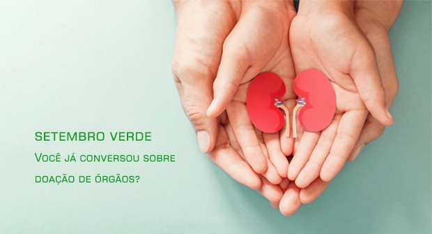

A Campanha Setembro Verde,tem por objetivo chamar a atenção para a doação de órgãos. A data tem o objetivo de conscientizar sobre a importância desse ato e incentivar a conversa familiar aberta sobre esse gesto de esperança e solidariedade, já que a autorização é feita pela família.

Cerca de 66,2 mil pessoas aguardam na lista de espera por um órgão no Brasil. A lista para transplantes é única e vale tanto para pacientes do SUS quanto da rede privada. No Distrito Federal (DF), são 1,6 mil pessoas no aguardo: 801 por rins, 732 por córneas, 44 por coração e 23 por fígado. Até agosto deste ano, foram realizados 545 transplantes, sendo 207 de córnea, 177 de órgãos (incluindo rim, fígado e coração) e 161 de medulas ósseas.